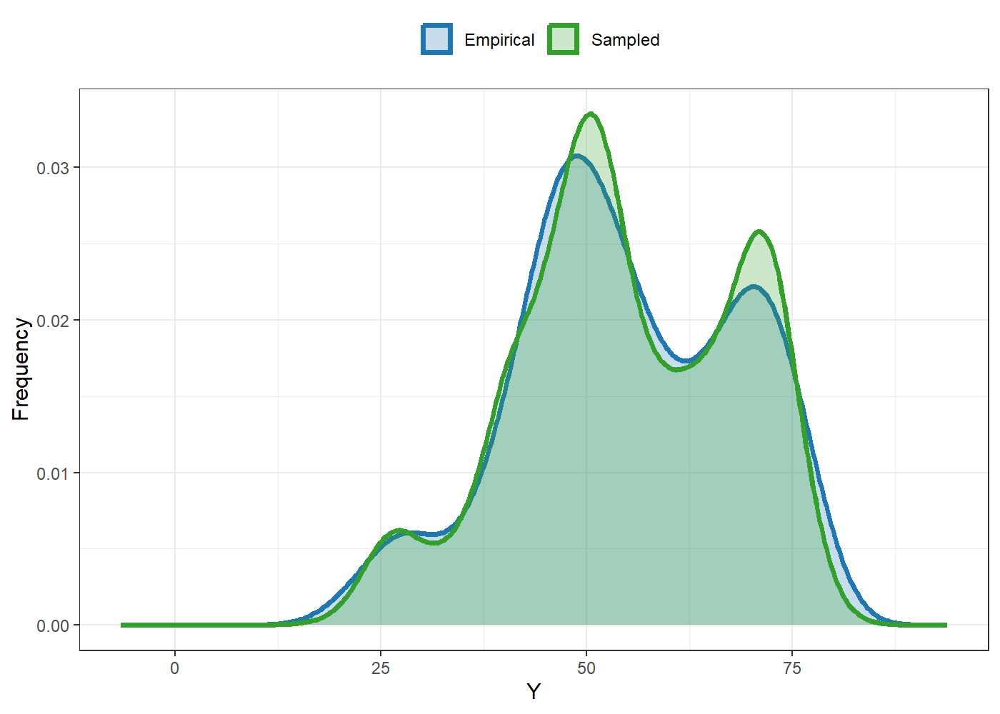
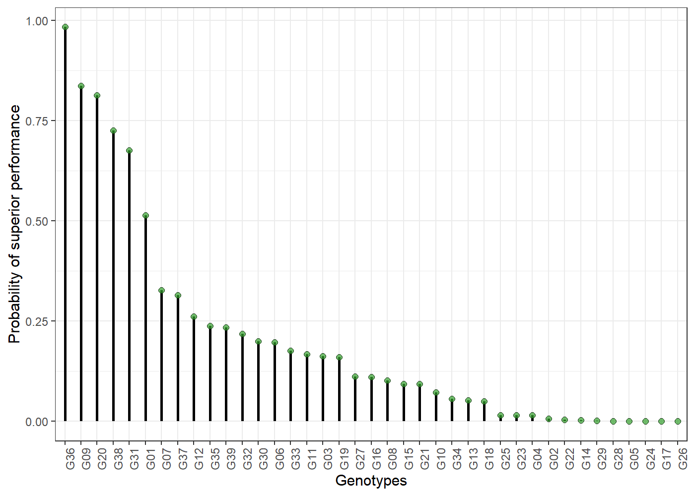
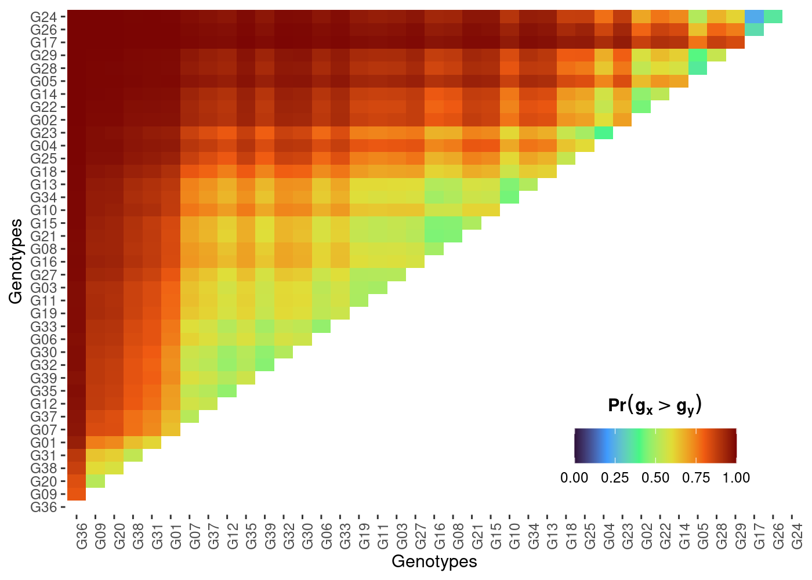
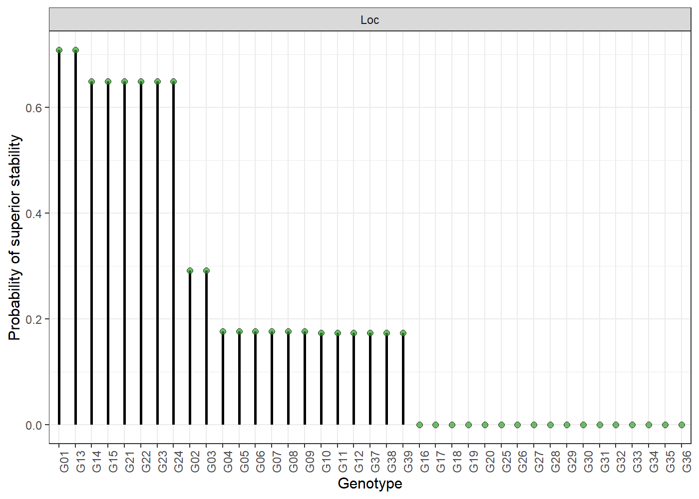
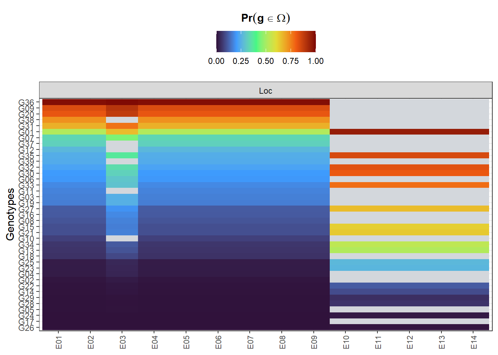

ProbBreed employs Bayesian statistics to analyse multi-environment trials’ data, and uses its outputs to estimate the marginal and pairwise probabilities of superior performance and superior stability of the genotypes, as well as their conditional probability of superior performance. The method is thoroughly described at https://doi.org/10.1007/s00122-022-04041-y.
Installation
You can install the CRAN version of ProbBreed using the following command:
install.packages("ProbBreed")Alternatively, you can install the development version of ProbBreed from GitHub with:
# install.packages("devtools")
devtools::install_github("saulo-chaves/ProbBreed")Usage
Currently, ProbBreed has nine available models implemented in the bayes_met function. See ?bayes_met for more details. An examples using the maize example dataset is described below:
mod = bayes_met(data = maize,
gen = "Hybrid",
loc = "Location",
repl = c("Rep","Block"),
trait = "GY",
reg = "Region",
year = NULL,
res.het = TRUE,
iter = 4000, cores = 4, chain = 4)gen, loc, repl, year and reg are all column names that contain information on genotypes, environments (locations), replicates, years (or seasons) and regions (or mega-environments). The maize has no multi-year information, so year = NULL. res.het indicates if a per-environmental residual variance should be estimated. trait is the column in data that contain the phenotypic observations. The other arguments are specifications for model fitting: the number of iterations, cores and chains. Feel free to customize these and other options according to your necessity.
The output of this function will be an object of class stanfit, which should be used in the extr_outs function for further processing before computing the probabilities per se. This function also provides some useful diagnostics. Here is how to use it:
The object of class extr provided by this function contains the effects’ posterior and maximum posterior, the models’ variance components and some posterior predictive checks. Here are them:
outs$variances
#> effect var sd naive.se HPD_0.05 HPD_0.95
#> 1 Rep 0.036 0.040 0.000 0.001 0.108
#> 2 Block 0.214 0.049 0.001 0.137 0.298
#> 3 Hybrid 0.217 0.075 0.001 0.118 0.353
#> 4 Location 7.995 3.864 0.043 3.773 15.124
#> 5 Hybrid:Location 0.369 0.068 0.001 0.260 0.485
#> 6 Region 4.712 18.433 0.206 0.013 17.110
#> 7 Hybrid:Region 0.056 0.041 0.000 0.002 0.130
#> 8 error_env1 0.879 0.200 0.002 0.595 1.236
#> 9 error_env2 0.945 0.257 0.003 0.593 1.418
#> 10 error_env3 1.398 0.315 0.004 0.961 1.965
#> 11 error_env4 0.591 0.147 0.002 0.388 0.862
#> 12 error_env5 1.062 0.240 0.003 0.732 1.494
#> 13 error_env6 1.453 0.327 0.004 0.980 2.039
#> 14 error_env7 0.285 0.073 0.001 0.186 0.420
#> 15 error_env8 2.000 0.476 0.005 1.311 2.847
#> 16 error_env9 0.581 0.165 0.002 0.362 0.884
#> 17 error_env10 0.628 0.150 0.002 0.423 0.905
#> 18 error_env11 1.254 0.288 0.003 0.851 1.779
#> 19 error_env12 0.456 0.116 0.001 0.296 0.670
#> 20 error_env13 0.732 0.179 0.002 0.484 1.062
#> 21 error_env14 1.834 0.401 0.004 1.264 2.556
#> 22 error_env15 0.826 0.189 0.002 0.567 1.172
#> 23 error_env16 1.813 0.422 0.005 1.221 2.584
outs$ppcheck
#> Diagnostics
#> p.val_max 0.3390
#> p.val_min 0.3222
#> p.val_median 0.5479
#> p.val_mean 0.5011
#> p.val_sd 0.5294
#> Eff_No_parameters 184.3898
#> WAIC2 3924.8912
#> mean_Rhat 1.0005
#> Eff_sample_size 0.8484You can also the plot S3 method for some useful visualizations. For e.g., the comparison between the empirical and sampled phenotype illustrates the model’s convergence:
plot(outs)
See ?plot.extr for more details and further options.
After these two steps, everything is set to compute the probabilities. This can be done using the function prob_sup:
A basic workflow using the available data is:
results = prob_sup(extr = outs,
int = .2,
increase = TRUE,
save.df = FALSE,
verbose = TRUE)This function generates an object of class probsup, which contains two lists: across and within. As their names suggest, the across list has the across-environments probabilities, and is suitable for a broader recommendation. Conversely, the within results are more appropriate to specific recommendations. For example, here are some probability of superior performances across and within environments:
head(results$across$perfo)
#> ID prob
#> 36 G9 0.997500
#> 1 G1 0.920000
#> 22 G29 0.788500
#> 24 G30 0.629375
#> 5 G13 0.616250
#> 35 G8 0.569000
head(results$within$perfo$gl)
#> gen E1 E10 E11 E12 E13 E14 E15 E16
#> 1 G1 0.984000 0.277875 0.386375 0.434125 0.262625 0.953625 0.311625 0.972625
#> 2 G10 0.010250 0.000875 0.001750 0.002500 0.026500 0.068000 0.000125 0.043000
#> 3 G11 0.006250 0.100125 0.110625 0.004875 0.608000 0.111875 0.745375 0.094750
#> 4 G12 0.153875 0.093000 0.045125 0.058750 0.064375 0.302125 0.173250 0.569250
#> 5 G13 0.202875 0.194625 0.136375 0.134125 0.070375 0.595250 0.807125 0.068500
#> 6 G14 0.000000 0.006750 0.111375 0.156500 0.030375 0.070875 0.000375 0.023625
#> E2 E3 E4 E5 E6 E7 E8 E9
#> 1 0.899000 0.619250 0.907125 0.522125 0.302500 0.005500 0.863875 0.385625
#> 2 0.093000 0.199250 0.001625 0.042875 0.024375 0.001750 0.000250 0.044000
#> 3 0.020625 0.031625 0.014250 0.110000 0.340375 0.017375 0.049625 0.229500
#> 4 0.413625 0.602125 0.193125 0.389125 0.430500 0.819750 0.160375 0.313000
#> 5 0.234375 0.705375 0.684750 0.606250 0.825625 0.467125 0.118750 0.537375
#> 6 0.001625 0.048000 0.122625 0.114750 0.631000 0.025000 0.037875 0.065000The S3 method plot is also available for probsup objects. Here are some of them:
- Probability of superior performance across environments
plot(results)
- Pairwise probability of superior performance across environments
plot(results, category = "pair_perfo", level = "across")
- Probability of superior stability
plot(results, category = "stabi")
- Probability of superior performance within environments
plot(results, category = "perfo", level = "within")
See more options at ?plot.probsup.
The estimation of these probabilities are strictly related to some key questions that constantly arises in plant breeding, like:
What is the risk of recommending a selection candidate for a target population of environments?
What is the probability of a given selection candidate having good performance if recommended to a target population of environments? And for a specific environment?
What is the probability of a given selection candidate having better performance than a cultivar check in the target population of environments? And in specific environments?
How probable is it that a given selection candidate performs similarly across environments?
What are the chances that a given selection candidate is more stable than a cultivar check in the target population of environments?
What is the probability that a given selection candidate having a superior and invariable performance across environments?
For a more detailed tutorial, see https://saulo-chaves.github.io/ProbBreed_site/.